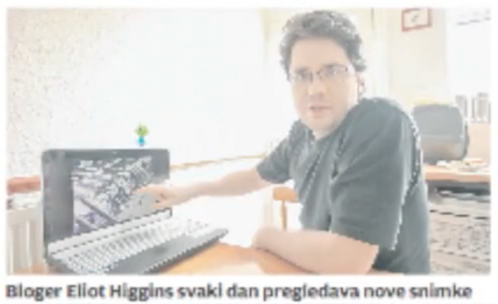

The story of Bellingcat starts with its founder, Eliot Higgins. In 2013, numerous media outlets reached out to him to learn more about his groundbreaking discoveries. Some featured him in print, others published articles online, and a few produced and aired video reports. The image above shows a screenshot from a newspaper article. That interview was also recorded. Your task is to find footage of this interview on YouTube, and provide the code at the end of the link (answer format: dQw4w9WgXcQ).
